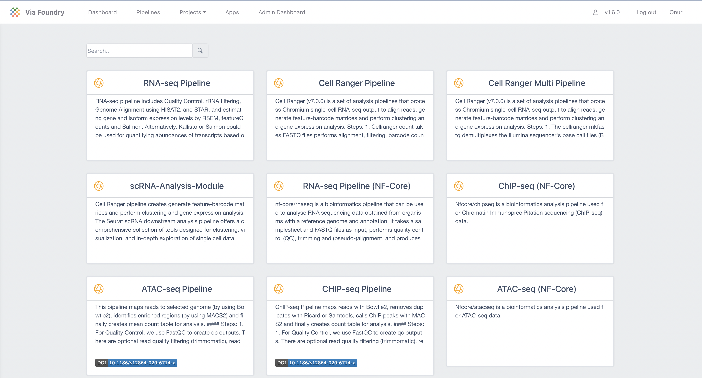
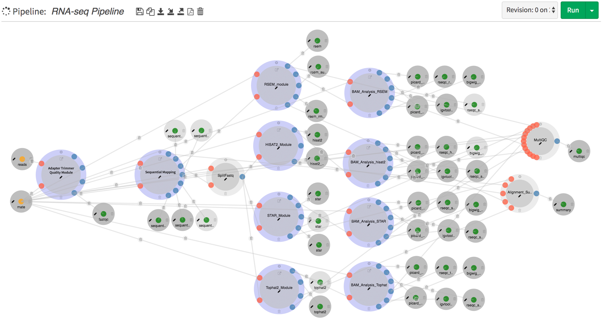
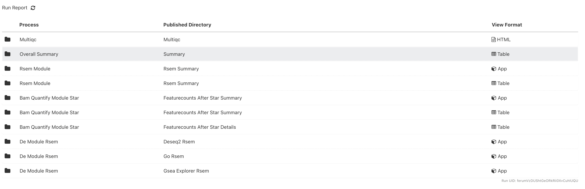
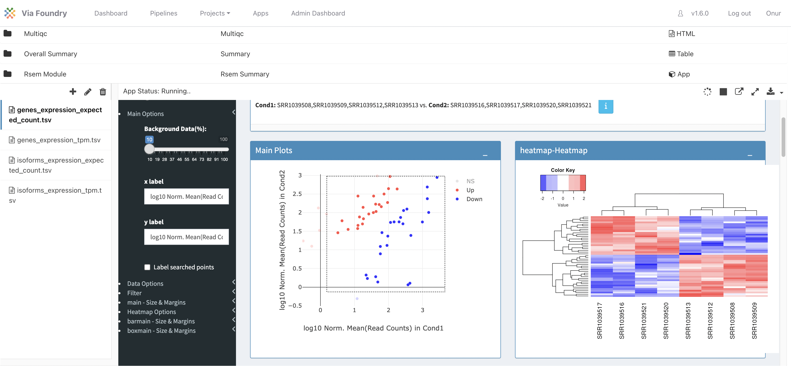
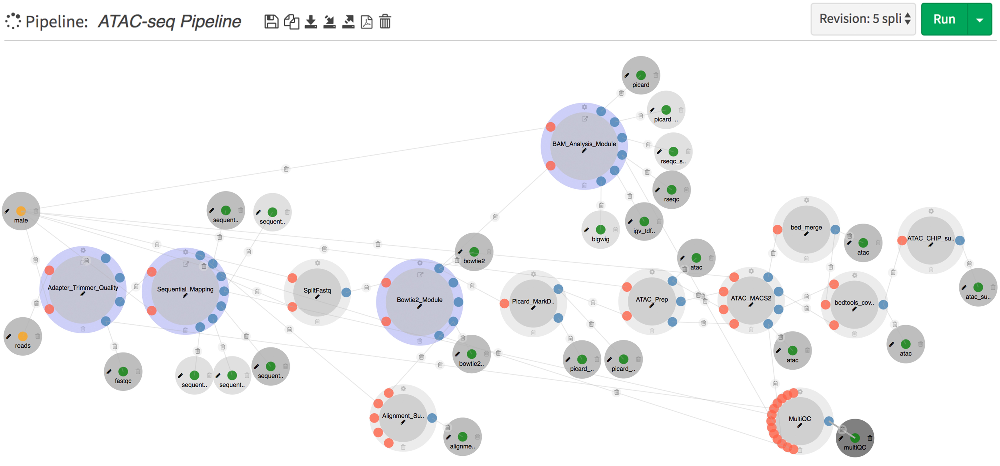
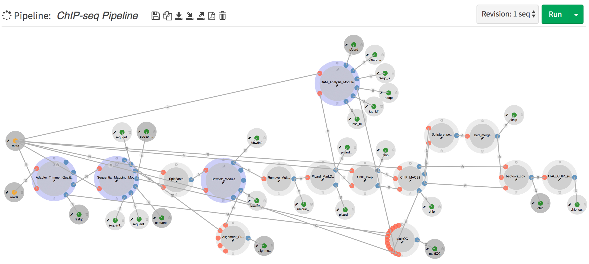

Pipeline Examples
There are numerous publicly available pipelines and processes available on the Via Foundry website. Please note that this document only contains a small sampling of the pipelines Via Foundry offers. For the full list of pipelines and to explore each pipeline in detail, please visit the Via Foundry Pipeline page.
Once you navigate to the Pipelines tab, simply click on the respective pipeline's box to access a comprehensive overview. This summary provides detailed information regarding the pipeline, such as its usage instructions and example output/report sections.

RNA-Seq Pipeline

The RNA-seq pipeline publicly available in Via Foundry includes several key steps for processing RNA-seq data:
- Quality Control: FastQC is used to generate quality control (QC) outputs. Optional processes such as read quality filtering (trimmomatic), read quality trimming (trimmomatic), and adapter removal (cutadapt) are available.
- rRNA Filtering and Genome Alignment: Bowtie2, Bowtie, and STAR are utilized for counting or filtering out and estimating the abundance of both standard and predefined sets of genomic loci, such as rRNAs, miRNAs, tRNAs, piRNAs, snoRNAs, and ERCC.
- Gene and Isoform Expression Estimation: RSEM is employed to align RNA-seq reads to reference transcripts and estimate gene and isoform expression levels.
- Genome Alignment: HISAT2, STAR, Kallisto or Salmon are employed to align RNA-seq reads to the genome. Optional estimation of gene and isoform expression levels can be performed using featureCounts and Salmon.
- Quality Metrics and Reports: If the user opts to perform genomic alignments, the pipeline generates overall quality metrics, including coverage and the number of mapped reads to different genomic and transcriptomic regions. These reports rely on Picard's CollectRNASeqMetrics program (Broad Institute, n.d.) and the RSeQC program (Wang, Wang, and Li 2012).
- Visualization: Optional generation of Integrative Genomics Viewer (IGV) and Genome Browser Files (TDF and Bigwig) is available.
- Quantification Matrix and Analysis: The RNA-seq pipeline provides a quantification matrix that includes estimated counts and transcript per million (TPM) values for each gene and annotated isoform. These matrices serve as input for differential gene expression analysis and can be directly uploaded to an embedded instance of DEBrowser software for interactive exploration of the resulting data (Kucukural et al. 2019).
Presented here is the example report tab for the RNA-Seq Run. Each section within the report consists of its own set of files, allowing you to thoroughly investigate and visualize the data within each respective section.

Below is a screenshot showcasing the interactive analysis of differential expression analysis using the Shiny app called DEbrowser.

ATAC-Seq and ChIP-Seq pipelines


Via Foundry offers comprehensive pipelines for the processing of ChIP-Seq and ATAC-Seq data, which are widely used in genomic research. Although these pipelines share many common processes, they exhibit specific differences at certain stages. Moreover, they rely on identical data preparation steps employed in the RNA-Seq pipeline, including read filtering, read quality reporting, and alignment to desired genomic locations.
The key steps involved in the ChIP-Seq and ATAC-Seq pipelines are as follows:
- Quality Control: The pipelines utilize FastQC to assess the quality of the sequencing reads and generate quality control outputs. Additionally, optional processes such as read quality filtering (trimmomatic), read quality trimming (trimmomatic), and adapter removal (cutadapt) can be employed to further refine the data.
- Counting and Filtering: To estimate the abundance of both standard and predefined sets of genomic loci (e.g., rRNAs, miRNAs, tRNAs, piRNAs, snoRNAs, ERCC), the pipelines employ tools like Bowtie2/Bowtie/STAR. These tools facilitate read counting or filtering to obtain valuable insights into the genomic regions of interest.
- Read Alignment: The short-read aligner Bowtie2 is employed to align the sequencing reads to a reference genome (Langmead and Salzberg 2012). In cases where the input files are large, such as those obtained from ATAC-Seq experiments, the pipeline optimizes alignment speed by splitting the files into smaller chunks and performing parallel alignments.
- PCR Duplicate Removal: The pipelines incorporate the Picard mark duplicates function (Broad Institute, n.d.) and Samtools (H. Li et al. 2009) to estimate and remove PCR duplicates. By employing merged alignments, the duplicate reads can be efficiently identified and eliminated, ensuring accurate downstream analysis.
- ATAC-Seq-specific Analysis: In the case of ATAC-Seq data, the pipeline performs additional steps. It identifies accessible chromatin regions by estimating the Tn5 transposase cut sites. This estimation involves positioning on the 9th base upstream of the 5' read end and extending by 29 bases downstream. This extension process is based on studies (Donnard et al. 2018; Buenrostro et al. 2013) that have shown it to more accurately reflect the exact positions accessible to the transposase. Subsequently, peaks are called using MACS2 (Zhang et al. 2008) in both the ChIP-Seq and ATAC-Seq pipelines.
- Consensus Peak Calling and Quantification: When processing multiple samples together, the ATAC-Seq and ChIP-Seq pipelines offer the option of generating consensus peak calls. This is achieved by merging all peaks individually called in each sample using Bedtools (Quinlan and Hall 2010). Furthermore, the pipelines quantify the number of reads in each peak location using Bedtools' coverage function, facilitating comprehensive analysis of the data.
- Data Analysis: As a result, both the ATAC-Seq and ChIP-Seq pipelines generate a matrix containing count values for each peak region and sample. This matrix can be directly uploaded to the embedded version of DEBrowser (Kucukural et al. 2019) for performing differential analysis. Alternatively, the matrix can be downloaded for further analysis using other tools or methods.
How To Cite Us
If you use Via Foundry (formerly DolphinNext) in your research, please cite:
Yukselen, O., Turkyilmaz, O., Ozturk, A.R. et al. DolphinNext: a distributed data processing platform for high throughput genomics. BMC Genomics 21, 310 (2020). https://doi.org/10.1186/s12864-020-6714-x
Support
For any questions or help, please reach out to support@viascientific.com with your name and question.